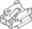

B40 Fuel injection services supply fuse ( FRONT )
- Path
- Electrical equipment > Connectors > B Various fuse holders and valves > B40 Fuel injection services supply fuse > B40 Fuel injection services supply fuse ( FRONT )
- Kind
- connector pinout (pin -> wire colour -> other end)
- Applies to
- engines: 1.6 TS , 1.8 TS, 2.0 JTS, 2.0 JTS; production: da 04/98 a 02/99; only with equipment: 115 CV
- Interactive page
- https://sloeber94.github.io/elrnDB-a156/en/#/3235242
Applies to: engines: 1.6 TS , 1.8 TS, 2.0 JTS, 2.0 JTS; production: da 04/98 a 02/99; only with equipment: 115 CV

Wiring | Colour |
|---|---|
AZZURRO (light blue) |